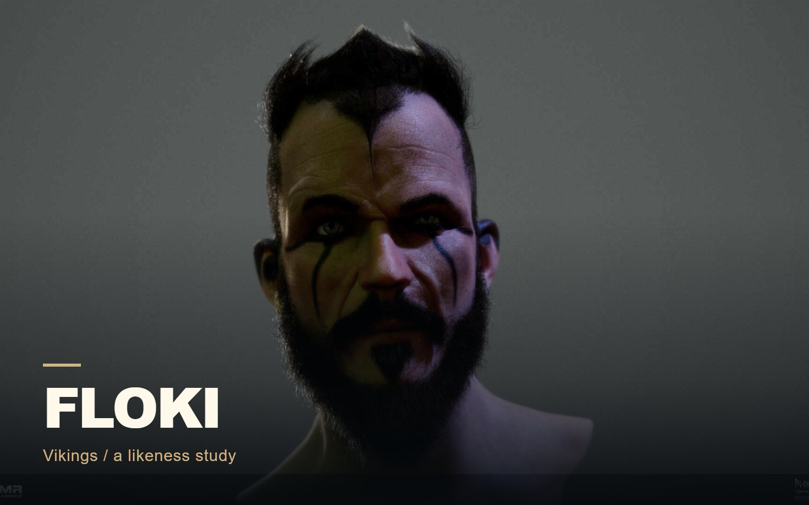

Characters
Floki | Vikings
A character study built around a younger, serious Floki.

THE PROJECT
A personal character study of Floki from Vikings, developed through sculpting, costume detail, materials, and lighting.
- MY CONTRIBUTION / FOCUS
- Character modeling, sculpting & presentation
I created this Floki character study, from the sculpted forms to the finished character presentation.
ZBrush
PROCESS & DESIGN
Choosing a version of the character.
I started by considering different versions of Floki, then settled on a younger, serious interpretation. The original clay views, facial close-ups, eye assets, costume details, and lighting comparisons show the layers behind the finished presentation.
Character direction
I chose the younger, serious Floki for the intensity and charisma of that interpretation.
From clay to surface
The clay and textured comparisons reveal how the expression reads before and after skin detail and the dark eye markings.
The complete silhouette
Costume, axe, hair, and beard carry the character beyond the portrait. Multiple angles show how these elements work together.
01 / Floki | Vikings
Finished character
Original character renders, from portrait to full costume.
02 / Floki | Vikings
Sculpt and facial development
Clay presentation, facial surface comparison, and separate eye assets.
03 / Floki | Vikings
Costume and lighting
Detail views and lighting variations from the original project.
04 / Floki | Vikings
Additional mesh study
Floki | Vikings / FILM & MOTION
Watch the Floki modeling demoreel
Original character presentation and modeling demoreel.
Watch on YouTube ↗